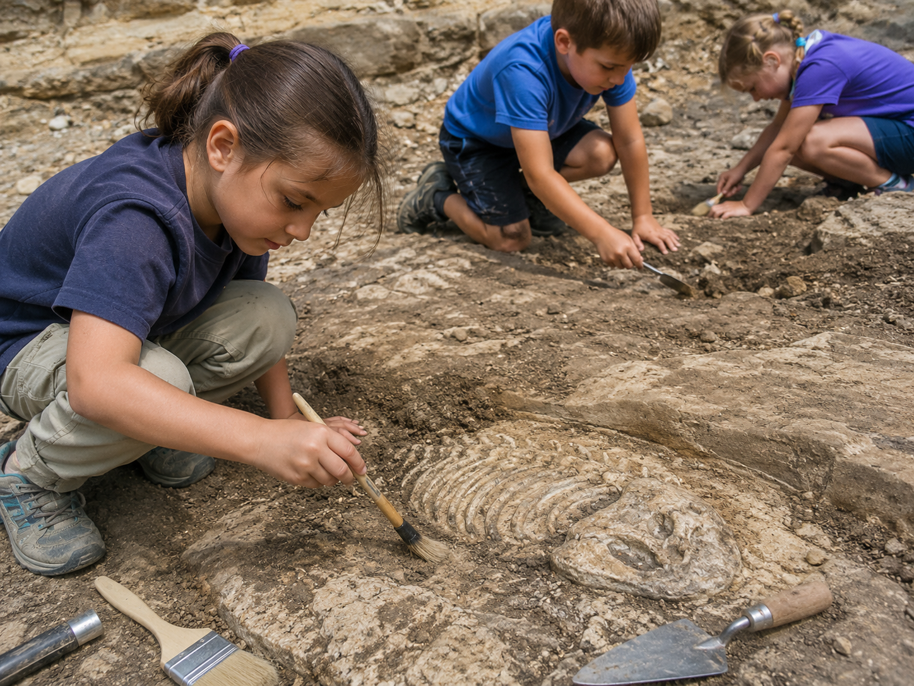
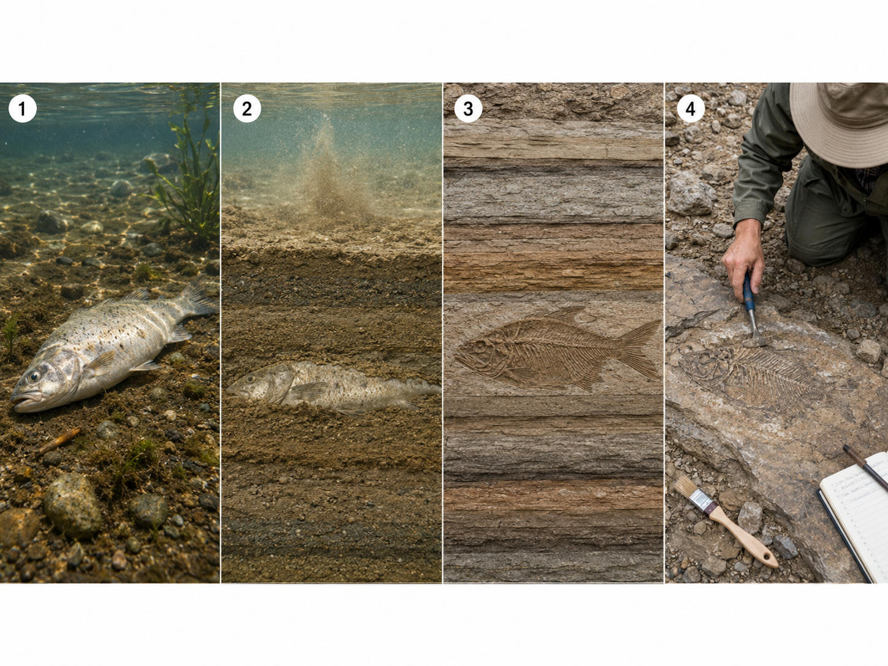
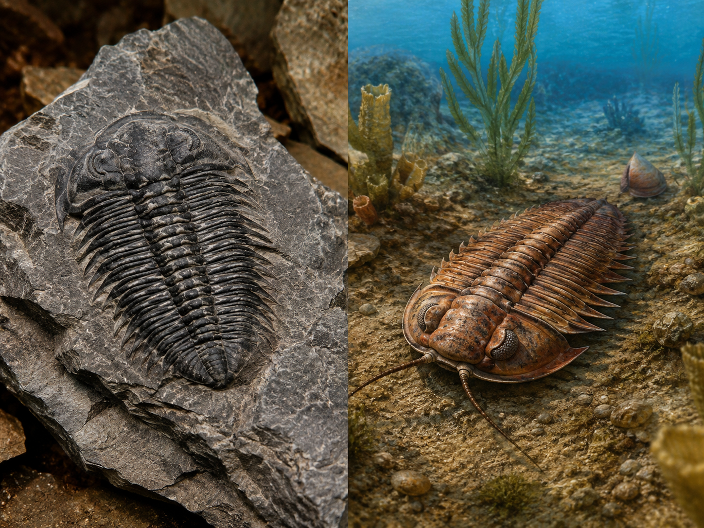
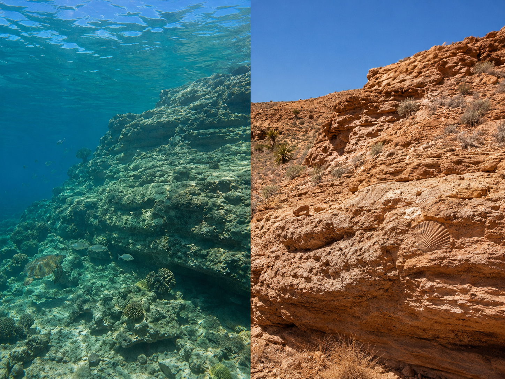

Keep this question in mind. By the end of the lesson, you'll be able to answer it with real evidence.
Start here. Learn the words you will use today.
Before you read a single word of this lesson, open your science notebook. You already know something about the word fossil — even if it's just a feeling or a picture in your head.
There are no wrong answers here — this is just what's already in your brain. At the end of the lesson, come back and see how your thinking changed.
Scientists who study fossils use these words all the time. Tap each card to flip it and read the definition. You'll see all of these words in the lesson.
Copy this sentence carefully into your science notebook:
"Fossils are evidence — they show that life existed on Earth long before any human walked here."
Now learn the main science idea.

A fossilfossilPreserved remains or traces of a living thing from long ago — pressed into rock over millions of years. is the preserved remains or traces of an ancient living thing. Bones, shells, leaf prints, and even footprints can all become fossils when buried in sediment over a very long time.
Fossils don't just show us that something once lived. They hold specific details — the shape of fins, the curve of a claw, the pattern of veins in a leaf. Each detail is a piece of evidenceevidenceInformation that supports an explanation. Scientists use evidence to reason carefully, not to guess..

When a scientist finds a fish fossil with visible fins and a spine, they can inferinferTo use clues and evidence to reach a careful explanation — not just guessing, but reasoning from what you observe. what the fish looked like and roughly how it moved. A large tooth with sharp edges tells a different story than a flat, grinding tooth.
Many of these ancient organisms are extinctextinctNo longer living anywhere on Earth. Fossils are often the only record that an extinct organism ever existed. — they no longer exist anywhere on Earth. Without fossils, we would have no idea they ever lived.

Here's something surprising: marine shell fossils have been found on top of mountains. Ocean fish fossils have been found in deserts. That isn't a mistake — it's evidence that those places used to be very different.
The environmentenvironmentThe surroundings where an organism lives — land, water, air, temperature, and the other organisms around it. an organism lived in left clues in the fossil record. A fern fossil tells you the area was once warm and humid. A coral fossil tells you shallow ocean water once covered that spot.
Real-World Connection: Scientists have found tropical plant fossils in Antarctica — evidence that millions of years ago, that frozen continent had a very different, warmer climate.

Fossils are evidence. They tell us what organisms looked like and where they lived — even if those organisms no longer exist and those environments have completely changed.
Deeper rock layers hold older fossils. By reading the layers, scientists can piece together a timeline of life on Earth.
Curious? Go Deeper
How does a fossil actually form? When an organism dies, its soft parts usually decay quickly. But if the hard parts — bones, shells, teeth — get buried fast enough in mud or sand, something interesting can happen. Minerals in the groundwater slowly replace the original material, atom by atom, until rock fills in the exact shape of the original bone. That process can take thousands to millions of years.
Not everything becomes a fossil. Most organisms decompose completely and leave no trace. That's why fossils are rare — and why every one that's found is genuinely valuable scientific evidence. Scientists estimate that less than 1% of organisms that ever lived have been preserved as fossils. What we know about ancient life comes from that tiny fraction.
A scientist who studies fossils is called a paleontologist. The work requires both careful field excavation and lab analysis — comparing fossil features to living organisms, using microscopes, and sometimes using chemical dating methods to estimate how old a fossil is.
Now test the idea yourself.
You'll need: Your science notebook, pencil, and colored pencils. No special materials needed — just careful thinking.
You're going to analyze five fossil clues the way a real paleontologist would. Study each image carefully — what do you notice? Use what you've learned to think like a scientist.
Choose your fossils: Pick any three fossils from the list (A through E). Write their letters in your notebook. You'll analyze all three.
Build your evidence chart: Draw a table with these five column headings: Fossil Clue / What I Observe / Possible Organism / Possible Environment / My Evidence. Fill in one row for each fossil you chose.
Pick one fossil and draw it: Sketch it as carefully as you can. Label at least three clues in your drawing — things like fins, veins, claw shape, or tooth size. Labels should say what you see, not just name the part.
Write your explanation: Use this format — "This fossil may show ___. I think this because ___. The environment may have been ___." Write one complete explanation for the fossil you drew.
Good scientists don't just say "it worked" or "it didn't work." Think carefully about what you noticed and what that tells you.
Tell the whole story of what you did: which fossils you picked, what you observed, what you inferred, and what your evidence was. Use your chart notes to help you.
Think through each question on your own. Write your answers in your science notebook before moving on.
Check what you understand.
Show what you learned.
🔍 Part A — Match Fossils to Evidence
For each fossil description, write the letter of the environment it most likely came from. Use what you know about how organisms live.
🚀 Part B — Short Answer
Answer each question in complete sentences. Use your science vocabulary.
Choose one fossil from your evidence chart. Write a full explanation using everything you've learned about fossils and ancient environments.
What did you observe?
💡 Start with: "When I looked at this fossil, I noticed…"
What does that evidence tell you?
💡 Start with: "I can infer from this that the organism…"
Why does this make sense?
💡 Start with: "This makes sense because in the lesson I learned that…"
📚 Try to use at least two of these words: fossil, evidence, infer, environment, extinct
🎨 Part C — Draw & Label
Draw a cross-section of rock showing at least two different rock layers. Include at least one fossil in each layer. Label each fossil and write one sentence explaining what each fossil tells scientists about the past environment.
Submit your work on Canvas using one of these options:
Make sure your submission includes all of these: